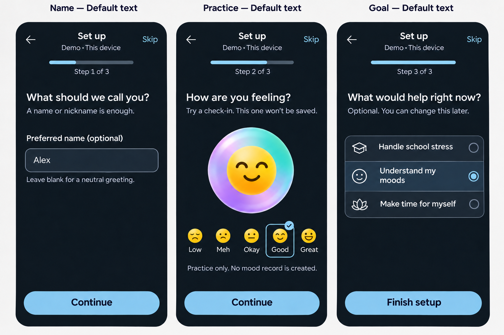
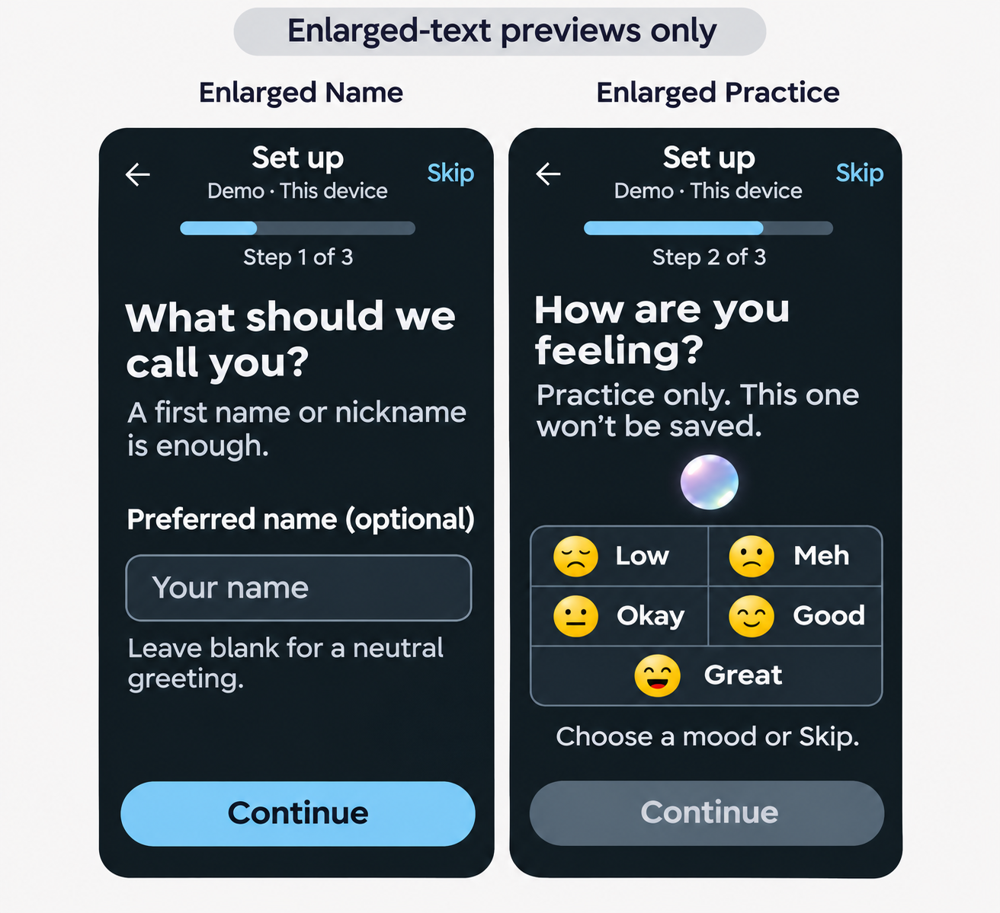
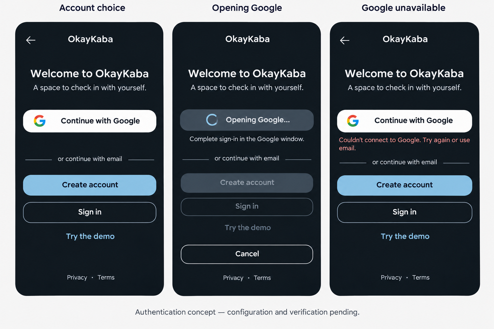

OKAYKABA · DARK FIRST-RUN · REVIEW DRAFT
Smaller default headings. Clearer account choices.
Three boards, eight panels. Approved dark palette retained. Default and enlarged text shown separately.
Mockups only. Google authentication is proposed and has not been configured or verified. No app code changed. No other social providers or scrolling marquee text are introduced.
1. Default text · restrained setup headings
The normal Name, Practice and Goal screens use smaller, lighter question headings while retaining readable labels and the approved dark identity.
Open full-resolution board
2. Enlarged text · accessibility previews only
Separate enlarged Name and Practice previews preserve wrapping, larger controls and the five labeled mood faces. They are not the default layout.
Open full-resolution board
3. Account choice · Google, email and demo
One dark account-choice screen with idle, opening and failure states. Authentication is a proposal pending configuration and verification.
Open full-resolution board
Design review checkpoint
Review the default heading emphasis and Google/email/demo action hierarchy. Font-size targets are specifications, not measured runtime results. Accessibility, provider branding and actual authentication need later verification.